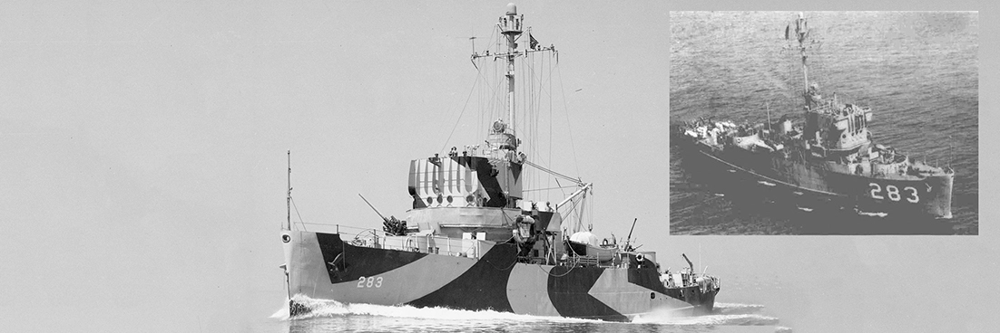
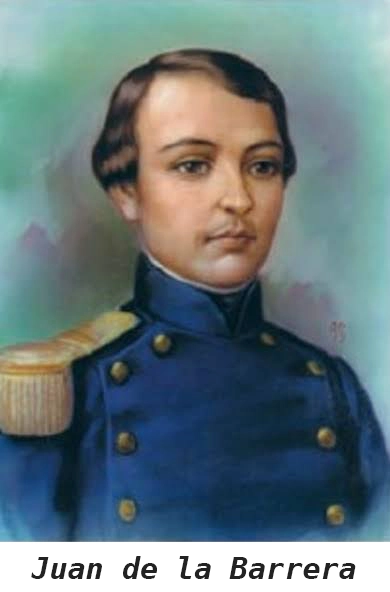
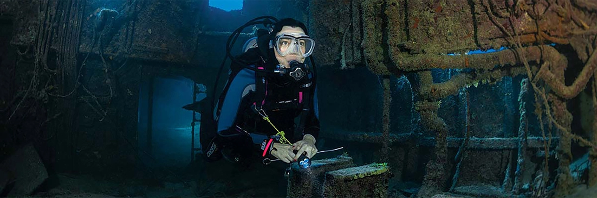

The C55 Jaun de la Barrera story:
Located approximately 15 minuites off Punta Cancun, The Lieutenant Juan de la Barrera is resting at a depth of approximately 80ft (25m) and is a favorite site for many divers, turtles and eagle ray visiting the area. However she is far from being simply another run-of-the-mill shipwreck and is instead a heroic vessel steeped in a rich WWII history.
The General Engineering and Dry Dock Co. in San Francisco began building USS Ransom (AM-283) on April 24th, 1943 and had her launched less than 5 months later on the September 18th. She was designated as Admiral Class Minesweeper and left the coast of California on October 15th, under the command of Lt. Comdr. William Norman McMillen, for Pearl Harbor.
She arrived a week later and reported for escort duty back to the west coast before fulfilling similar duties to the in the Pacific at locations such as Eniwetok Atoll, Ulithi Atoll and Kossol Roads Reef. In early 1945, she worked in antisubmarine screen patrols off Palau, between Kossol Roads and Peleiu before proceeding back to Ulithi to stage for Operation “Iceberg” which is more commonly known as The Battle of Okinawa.
On March 19th she sailed in convoy with Task Unit 52.5.3 (codename “Galvanic”) and, from March 25th to April 18th, she courageously swept and patrolled around Okinawa despite heavy Japanese coastal and aerial resistance. According to Cthulhu Divers research, it was during this time, specifically April 6th, when Ransom saw the most action as she came under attack by three kamikaze pilots whilst bravely rescuing 52 servicemen of Rodman (DMS-21) and Emmons (DMS-22). Managing to shoot down all three pilots, the final kamikaze's bomb nevertheless did still incur some insignificant damage to the ship.
Relieved of sweeping duties on April 18th, Ransom continued in the war effort and was assigned to antiaircraft and antisubmarine patrol duties. Again she received further damage on the 22nd from a Japanese Navy Aichi D3A (Allied code name: "Val") dive bomber plane which she promptly splashed only 10 feet off her port quarter but continued with her patrol duties through June.
On Independence Day that year, Ransom resumed mine-sweeping operations. Throughout the month on July she operated in the East China Sea, sweeping a total of seven mines before retiring to Leyte on August 6th for overhaul and repair. Returning to Okinawa at the end of the month, she continued on to Japan with TG 52.4, and on September 9th began sweeping mines near Nagasaki before being relocating to Bungo Suido on September 21st to continue sweeping operations. She is reported to have swept an impressive 73 enemy mines during this time.
Ransom departed Kure for the United States 20 November and received 3 battle stars for her service during WWII. Transiting the Panama Canal December 30th 1945, she continued on to New Orleans, underwent pre-inactivation overhaul, and was decommissioned at Orange, Texas, March 3rd 1947.
Berthed at Orange for the next 4 years, Ransom was recommissioned March 16th 1951 during the Korean War and reassigned to the Atlantic Fleet and operated primarily out of Charleston, Norfolk, and Yorktown until 1953. She then operated from New England to the Caribbean until decommissioned at Charleston in June 1953. She arrived back at Orange on September 22nd and entered the Atlantic Reserve Fleet.
On February 7th 1955, Ransom was reclassified as a Fleet Minesweeper MSF-283 and was moved to Florida in November 1958 where she remained until struck from the Navy list on May 1st 1962. She was then acquired by the Mexican navy and renamed ARM DM-12 and later, in 1994, ARM Teniente Juan de la Barrera (C55) in honour of a military cadet who was killed in the defence of a gun battery in Chapultepec during the Mexican-American War.
In 2000 she was gutted and intentionally suck as an artifical reef off the coast of Cancun. Unfortunately she was further damaged by hurricane Wilma which struck the Yucatán Coast in 2005 and split her in half. Nevertheless, she now finds herself home for grunt, grouper, eels and, during the winter months, spotted eagle ray.
